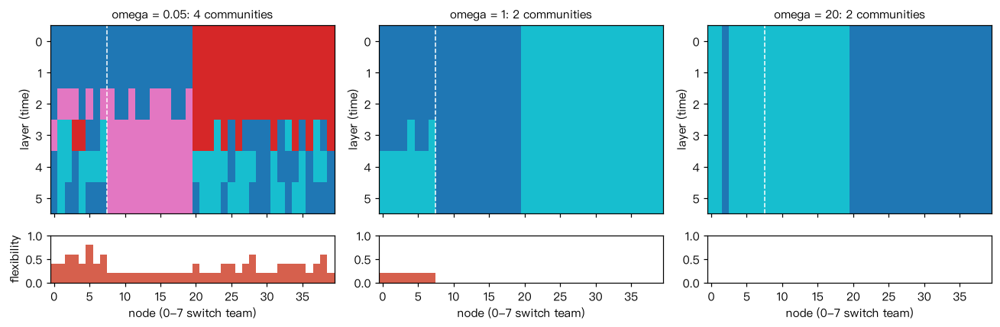

Example15 / 15
时变网络的多层模块度与节点灵活性
构造 6 个时间层、40 个节点的时变网络：前 3 层节点 0–19 与 20–39 各成一组； 后 3 层节点 0–7 “换队”加入第二组。按 Mucha 等（2010）的多层模块度构造超邻接模块度矩阵： B = blockdiag( A_s - γ k_s k_s^T / 2m_s ) + ω·(相邻层中同一节点之间的耦合)，Q = Σ B_{ij} δ(g_i,g_j) / 2μ， 并用一个通用的 Louvain 式“局部移动 + 聚合”算法（适用于任意对称矩阵 B，类似 GenLouvain）最大化 Q。 节点灵活性 = 该节点在相邻层之间改变社团归属的次数 / (层数 - 1)。 输出：ω 适中时，换队的 0–7 号节点灵活性约为 1/5，其余节点为 0； ω 很小时各层几乎独立划分、标签在层间可能“乱跳”；ω 很大时各层被迫取相同划分，换队被掩盖。
Output输出图

Output文字输出
ω=0.05 Q=0.347 社团总数 4 灵活性均值：换队节点 0.53，其余节点 0.28 ω=1 Q=0.411 社团总数 2 灵活性均值：换队节点 0.20，其余节点 0.00 ω=20 Q=0.842 社团总数 2 灵活性均值：换队节点 0.00，其余节点 0.00
Code代码
# 构造 6 个时间层、40 个节点的时变网络：前 3 层节点 0–19 与 20–39 各成一组；
# 后 3 层节点 0–7 “换队”加入第二组。按 Mucha 等（2010）的多层模块度构造超邻接模块度矩阵：
# B = blockdiag( A_s - γ k_s k_s^T / 2m_s ) + ω·(相邻层中同一节点之间的耦合)，Q = Σ B_{ij} δ(g_i,g_j) / 2μ，
# 并用一个通用的 Louvain 式“局部移动 + 聚合”算法（适用于任意对称矩阵 B，类似 GenLouvain）最大化 Q。
# 节点灵活性 = 该节点在相邻层之间改变社团归属的次数 / (层数 - 1)。
# 输出：ω 适中时，换队的 0–7 号节点灵活性约为 1/5，其余节点为 0；
# ω 很小时各层几乎独立划分、标签在层间可能“乱跳”；ω 很大时各层被迫取相同划分，换队被掩盖。
import networkx as nx
import numpy as np
N, T, gamma = 40, 6, 1.0
rng = np.random.default_rng(0)
layers = []
for s in range(T):
g = np.r_[np.zeros(20, int), np.ones(20, int)]
if s >= 3:
g[:8] = 1
P = np.where(g[:, None] == g[None, :], 0.4, 0.03)
A = np.triu(rng.random((N, N)) < P, 1).astype(float)
layers.append(A + A.T)
def supra_B(omega):
n = N * T
B = np.zeros((n, n))
for s, A in enumerate(layers):
k = A.sum(1)
B[s * N:(s + 1) * N, s * N:(s + 1) * N] = A - gamma * np.outer(k, k) / k.sum()
for s in range(T - 1):
idx = np.arange(N)
B[s * N + idx, (s + 1) * N + idx] = omega
B[(s + 1) * N + idx, s * N + idx] = omega
return B
def louvain_on_B(B, seed=0):
"""对任意对称矩阵 B 最大化 Σ_ij B_ij δ(g_i,g_j)：局部移动 + 聚合，直到不再变化。"""
rng = np.random.default_rng(seed)
n = B.shape[0]
member = np.arange(n) # 原始节点 → 当前超节点
Bc = B.copy()
while True:
m = Bc.shape[0]
g = np.arange(m)
moved_any, improved = False, True
while improved:
improved = False
for i in rng.permutation(m):
Bi = Bc[i].copy()
Bi[i] = 0
gain = np.bincount(g, weights=Bi, minlength=m) # 连向各社团的 B 之和（不含自身）
best = np.argmax(gain)
if gain[best] > gain[g[i]] + 1e-12:
g[i] = best
improved = moved_any = True
if not moved_any:
break
_, g = np.unique(g, return_inverse=True)
Z = np.eye(g.max() + 1)[g]
Bc = Z.T @ Bc @ Z
member = g[member]
return member
lab_by_omega = {} # 存下结果用于作图
for omega in [0.05, 1.0, 20.0]:
B = supra_B(omega)
lab = louvain_on_B(B).reshape(T, N) # lab[s, i]：节点 i 在第 s 层的社团
two_mu = sum(A.sum() for A in layers) + 2 * omega * N * (T - 1)
Q = B[lab.ravel()[:, None] == lab.ravel()[None, :]].sum() / two_mu
flex = (lab[1:] != lab[:-1]).mean(0)
print("ω=%-5g Q=%.3f 社团总数 %d 灵活性均值：换队节点 %.2f，其余节点 %.2f"
% (omega, Q, len(np.unique(lab)), flex[:8].mean(), flex[8:].mean()))
lab_by_omega[omega] = (lab, flex)
# 作图：每个 ω 下节点（列）× 时间层（行）的社团标签，下方小条为节点灵活性
import matplotlib.pyplot as plt
fig, axes = plt.subplots(2, 3, figsize=(12, 4), gridspec_kw={"height_ratios": [4, 1]}, sharex=True)
for j, (omega, (lab, flex)) in enumerate(lab_by_omega.items()):
_, relab = np.unique(lab, return_inverse=True)
axes[0, j].imshow(relab.reshape(T, N), aspect="auto", cmap="tab10", interpolation="nearest")
axes[0, j].axvline(7.5, color="white", ls="--", lw=1)
axes[0, j].set_title("omega = %g: %d communities" % (omega, len(np.unique(lab))), fontsize=10)
axes[0, j].set_ylabel("layer (time)")
axes[1, j].bar(range(N), flex, color="#d6604d", width=1)
axes[1, j].set_ylim(0, 1); axes[1, j].set_xlabel("node (0-7 switch team)")
axes[1, 0].set_ylabel("flexibility")
plt.tight_layout(); plt.show()Run在浏览器中运行
首次加载 Python 环境约需 20–40 秒；可以修改参数后重新运行。